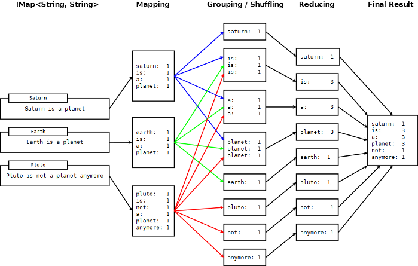

This section will give a deeper insight on the MapReduce pattern and help to understand the semantics behind the different MapReduce phases and how they are implemented in Hazelcast.
In addition to this, there are hints in the sections which compare Hadoop and Hazelcast MapReduce implementation to help adopters with Hadoop background to quickly get familiar with their new target.
Below flowchart demonstrates a basic workflow of the already mentioned word count example (distributed occurrences analysis). From left to right, it iterates over all entries of a data structure (in this case an IMap). In the mapping phase, it splits the sentence in single words and emits a key-value pair per word with the word as a key and 1 as the value. In the next phase, values are collected (grouped) and transported to their corresponding reducers where they are eventually reduced to a single key-value pair with the value as the number of occurrences of the word. As the last step, the different reducer results are grouped up to the final result and returned to the requester.

In pseudo code, the corresponding map and reduce function would look like the following. Hazelcast code example will be shown in the next section.
map( key:String, document:String ):Void ->
for each w:word in document:
emit( w, 1 )
reduce( word:String, counts:List[Int] ):Int ->
return sum( counts )
As seen in the workflow example, a MapReduce process consists of multiple phases. The original MapReduce pattern describes two phases (map, reduce) and one optional phase (combine). In Hazelcast, these phases are either only existing virtually to explain the data flow or are executed in parallel during the real operation while the general idea is still persisting.
(K x V)* -> (L x W)*
[(k1, v1), ..., (kn, vn)] -> [(l1, w1), ..., (lm, wm)]
Mapping Phase
The mapping phase iterates all key-value pairs of any kind of legal input source. The mapper then analyzes the input pairs and emits zero or more new key-value pairs.
K x V -> (L x W)*
(k, v) -> [(l1, w1), ..., (ln, wn)]
Combine Phase
In the combine phase, multiple key-value pairs with the same key are collected and combined to an intermediate result before being send to the reducers. Combine phase is also optional in Hazelcast, but is highly recommended to use to lower the traffic.
In terms of the word count example, this can be explained using the sentences "Saturn is a planet but the Earth is a planet, too". As shown above, we would send two key-value pairs (planet, 1). The registered combiner now collects those two pairs and combines them to an intermediate result of (planet, 2). Instead of two key-value pairs sent through the wire, there is now only one for the key "planet".
The pseudo code for a combiner is pretty the same as for the reducer.
combine( word:String, counts:List[Int] ):Void ->
emit( word, sum( counts ) )
Grouping / Shuffling Phase
The grouping or shuffling phase only exists virtually in Hazelcast since it is not a real phase; emitted key-value pairs with the same key are always transferred to the same reducer in the same job. That way they are grouped together which is equivalent to the shuffling phase.
Reducing Phase
In the reducing phase, the collected intermediate key-value pairs are reduced by their keys to build the final by-key result. This value can be a sum of all the emitted values of the same key, an average value or something completely different depending on the use case.
A reduced representation of this phase:
L x W* -> X*
(l, [w1, ..., wn]) -> [x1, ..., xn]
Producing the Final Result
This also is not a real MapReduce phase but is the final step in Hazelcast after all reducers notified that reducing has finished. The original job initiator then requests all reduced results and builds the final result.
The Internet is full of useful resources to find deeper information on MapReduce. Below is a short collection of some more introduction material. In addition, there are a lot of amazing books written about all kinds of MapReduce patterns and how to write a MapReduce function for your use case. To name them all is sadly out of scope of this documentation.